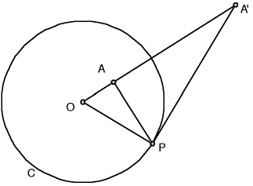

Constructing the Inverse of a Point
|  |
| Construction Suppose the point A lies within the circle C. |
| Draw a line through center O and the point A. |
| Draw a line perpendicular to OA through point A. |
| Let P denote the intersection of this perpendicular and the circle. |
| Draw the tangent to C at P and label A' the intersection of this tangent with OA. |
| This point A' is the inverse of the point A with respect to the circle C. |
The same diagram, reversing the places of A and A', constructs the inverse of a point A outside the circle C.
This was Appolonius' original construction. We prove this gives the more familiar
condition
| Proof Triangles OA'P and OPA are similar. |
| Consequently, |
| Cross-multiplying gives the familiar condition. |
Return to Basic constructions.